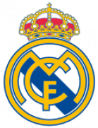
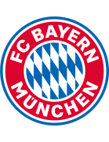

Real Madrid

Country: Spain
Stadium: Santiago Bernabéu
Founded: 1902
Manager: Carlo Ancelotti
Achievements: 14-time UEFA Champions League winners, 35-time La Liga champions
Real Madrid is known for its dominance in European football, having won the UEFA Champions League more times than any other club. Their Galácticos era, which featured players like Zidane, Ronaldo, and Beckham, remains iconic.
Barcelona

Country: Spain
Stadium: Camp Nou
Founded: 1899
Manager: Xavi Hernández
Achievements: 5-time UEFA Champions League winners, 27-time La Liga champions
Barcelona is famous for its "tiki-taka" style of play, popularized under Pep Guardiola. The club has produced some of the greatest footballers, including Lionel Messi, who spent almost his entire career at Barcelona.
Bayern Munich

Country: Germany
Stadium: Allianz Arena
Founded: 1900
Manager: Thomas Tuchel
Achievements: 6-time UEFA Champions League winners, 33-time Bundesliga champions
Bayern Munich is the most successful club in German football, regularly dominating the Bundesliga. Their treble-winning season in 2020, including a UEFA Champions League title, solidified their status as European giants.
Manchester City

Country: England
Stadium: Etihad Stadium
Founded: 1880
Manager: Pep Guardiola
Achievements: 1-time UEFA Champions League winner, 9-time Premier League champions
Manchester City has risen to the top of European football under the ownership of Sheikh Mansour. Their recent dominance in the Premier League under Pep Guardiola, including a treble in 2023, has made them a force in world football.
Arsenal

Country: England
Stadium: Emirates Stadium
Founded: 1886
Manager: Mikel Arteta
Achievements: 13-time Premier League champions, 14-time FA Cup winners
Arsenal is renowned for its 'Invincible' season in 2003-04, when the club went unbeaten throughout the entire Premier League campaign under Arsène Wenger. They are also the most successful club in FA Cup history.